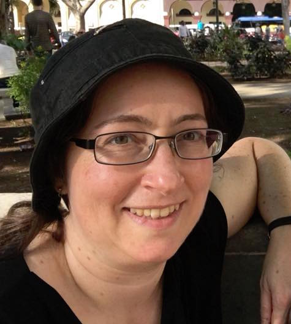

Lisa Friedland
Update, 2023-2024: I have been taking some time out of the workforce to attend to family matters.
Brief bio: I'm a computer scientist by training, with a Ph.D. and M.S. from the University of Massachusetts Amherst, and a B.A. from Harvard.
My research is in data science (a.k.a. data mining), machine learning, network science, and computational social science.
I've worked on a diverse range of projects. They've touched on Twitter, fake news, inferring social ties, anomaly and fraud detection, near-duplicate detection and data linking, information retrieval and text processing, relational learning, and bioinformatics.
What tie these together are a few themes: working with graph-structured data; understanding complex behavior through simple models and baselines; and manipulating real data to learn something new about the world.